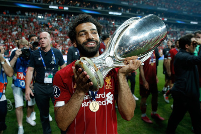

Uma torcida extremamente apaixonada por futebol, ao ponto de fazer diversas loucuras pelo clube. Uma torcida que ama rock e até mesmo a forma do time jogar, dizem que é no estilo Rock And Roll, com isso, adotaram a música You'll Never Walk Alone, da banda Gerry And The Pacemakers, como hino (não oficial) alternativo da equipe
São 180 milhões de torcedos dos Reds (assim como o clube é conhecido). Acostumada a vaiar o hino da Champions League, por conta, da reedição da final, mas, também, por causa de um documento de 220 páginas de uma investigação independente que exonerou os torcedores de culpa.
Formado em 1892, Anfield, tem capacidade para 53.394 lugares. Entre 1984 e 1891 foi a casa do Everton, o rival clube dos Reds. O ste maior estádio da Inglaterra, tem seus portões com nomes de Bob Paisley (Maior treinador que o clube ja teve) e Bill Shanklys, também ex treinador do clube
Atual treinador da equipe, de origem Alemã, possue diversos títulos conquistados com essa camisa. Treinador da equipe desde 2015, apaixonado por futebol, com uma maneira muita agressiva de montar seus times. Klopp também é um dos ídolos dos Reds
Localizado no Noroeste da Inglaterra, Reino Unido, era uma vila de pescadores antes de se tornar uma cidade. Uma cidade que tinha apenas sete rua por muito tempo, com 500 habitantes. A cidade tem uma temperatua boa com invernos tranquilos e verões não muito quente
O egípcio que é ídolo dos Reds, um dos melhores jogadores do mundo, atua hoje na equipe, desfilando pelos gramados com seus gols e dribles magníficos. No clube desde 2017, Salah já jogou por outras equipes, até mesmo rival do clube (Chelsea). Porém isso não muda nada para os torcedores, até porque Salah foi protagonistas dos principais títulos do Liverpool nos últimos anos e tem seu nome cantado pela equipe quase todos os jogos "MOH SALAH, MOH SALAH"
